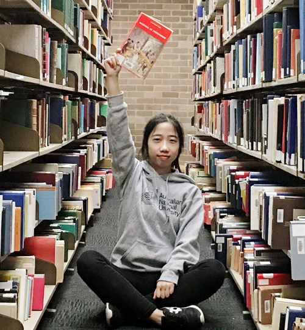

|  |
I am currently pursuing a master's degree in modern Chinese literature and I will complete the M.A. program in July 2019.
My research interests encompass gender and sexuality in modern Chinese literature and culture,
especially in the times of wars and revolutions in the twentieth-century China.
I am also interested in modern Chinese academic intellectuals and the poetry and prose in modern Chinese literature. My ongoing master's thesis focuses on the wartime critical periodicals and their relations with scholars' writing in Kunming and Chongqing, so as to examine how a new kind of academic prose was formed in the Anti-Japanese War. Email: 1601211260@pku.edu.cn Curriculum Vitae[pdf] |